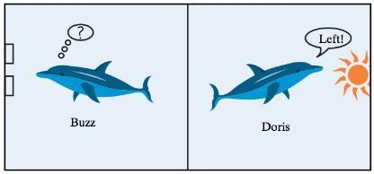
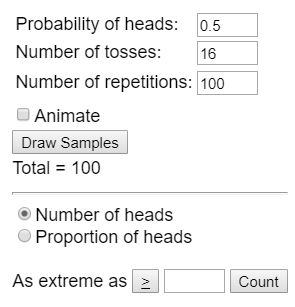

Introduction to Chance Models
Fall 2026
Sample: the set of observational units on which we collect data
Sample size: the number of observational units in the sample
Statistic: the number summarizing the result of the _____________
Population: the collection of ALL elements that are of interest for a given problem
Parameter: the long-run numerical property of the ________________
Probability: long-run ______________ of times an outcome from a random process occurs
Parameters are the values belonging to the population of interest. In most cases, this will be an _____________ value.
Statistics are observed values from a sample. These are always ___________ and are used to estimate the parameter.
Chance models: A real or computerized process to generate data according to a well-understood set of conditions
Consider the Helper / Hinderer experiment
(Observed) Statistic: 14 out of 16 infants chose the helper
Had the infants been randomly selecting between the two options, how many infants would we expect to select the helper by chance? 8/16
Statistical significance: is 14/16 likely to happen by chance? Would 10/16 be likely by chance?
In 1964, two dolphins (Buzz and Doris) were trained to push one of two buttons in a pool in reaction to a light. If the light flashed, the dolphins pushed the button on the left to get a fish. If the light was constant, the dolphins needed to push the button on the right. Once they learned this behavior, the dolphins were separated by a wall (only Doris could see the light; only Buzz could push the buttons). To get a fish, Doris would need to communicate with Buzz. The researcher, randomly deciding to make the light shine constant or flash, tested the dolphins’ ability to communicate.

Ask a Research Question
Design a Study and Collect Data
Observational Unit?
Variable of Interest?
Categorical or Quantitative?
Explore the Data
Sample?
Observed Statistic?
Draw Inferences Beyond the Data
Parameter- the long-run proportion of times Buzz pushes the correct button
Unknown because we cannot observe every selection Buzz ever makes
Use our sample to make general conclusions about the parameter
Formulate Conclusions
Two Possibilities
Buzz is just guessing
Something else is going on (i.e. the dolphins are actually communicating)
Conclusions for the above two possibilities based on our sample data
To find evidence in support of either conclusion, must generate data to simulate what would happen if guessing
We will focus on using the 3S strategy to determine if outcomes are likely due to chance.
Statistic: from the observed sample data
Simulate: Identify a “by chance alone" model (chance model) for scenario, and repeatedly simulate values for the statistic under that model.
Strength of Evidence: Unusual statistic? Does it fit into the pattern of the probability distribution?
Unlikely – Not by chance, more than guessing
Likely – Chance model is plausible
A null distribution is the behavior that we would expect to occur under ___________.
What are the two possible outcomes for each trial? Are these equally weighted?
What is the probability that each outcome occurs under the assumption that Buzz and Doris are actually not communicating?
How many trials did we have in this study?
In the case of Buzz and Doris, we can flip a coin to simulate the process of Buzz randomly guessing.
| Simulation | Real Study |
|---|---|
| Coin Flip | Guess by Buzz |
| Heads | Correct Guess |
| Tails | Incorrect Guess |
| Chance Model | 0.5 probability of picking correct button if Buzz is just guessing |
| One repetition | One set of 16 simulated attempts by Buzz |
Grab a coin and flip it 16 times (or go to https://www.random.org/coins/)
Keep track of how many times the coin landed heads up.
Record your value on the whiteboard
What does each “dot” on the plot represent?
Say that we would want 100 repetitions of this process. Flipping a coin would be tedious to do. To alleviate this issue, we can use the “One Proportion” applet (<http://www.isi-stats.com/isi2nd/applets2021.html).

Based on the dot-plot, would you be convinced of the research question if the study showed…
15 out of 16 trials Buzz chose the correct button?
10 out of 16?
13 out of 16?
12 out of 16?
When do you become convinced?
π (pi) is the ______________ symbol for proportions
“Long run proportion”
Since it is for a population, we typically do not know this value
\(\widehat{p}\) (p-hat) is the _______________________ for proportions
n is the sample size
Example: Helper-Hinderer
Parameter (\(\pi\)) – The long run proportion of times a baby choses the helper toy.
Observed Statistic: \(\widehat{p} = \frac{14}{16} = 0.875\)
Sample Size: \(n = 16\)
When establishing a hypothesis, we need two components: a null and alternative hypothesis.
\(H_{o} \rightarrow\) Null: “random chance alone”
Chance model
Equal to (=)
\(H_{A} \rightarrow\) Alternative: “there is an effect”
What researchers hope to support
Pick <, >, or \(\neq\) based on what the researchers would like to show
Null hypothesis (for proportions):
Alternative hypothesis (for proportions):
π (<, >, ≠) “expected parameter value”
Choose (<, >, ≠) from the research question
In Words:
Null: The long run proportion of times Buzz guesses correctly is equal to 0.5.
Alternative: The long run proportion of times Buzz guesses correctly is greater than 0.5.
In Symbols:
For proportions, our null hypothesis will not always be equal to 0.5. Consider the context of the following research questions.
| Research question | Null hypothesis | Alternative Hypothesis |
|---|---|---|
| Do even numbers appear less often than odd numbers on a die? | ||
| Does a card dealer have an ace show up more often? | ||
| Are there more traffic accidents in winter than other seasons? |
Research question: do you throw scissors less than paper and rock?
Suppose you played a friend 12 times and you chose scissors 3 times. Identify the following.
Observational unit:
Sample size:
Variable of interest:
Parameter (π):
Observed statistic (\(\widehat{\mathbf{p}}\)):
Set up the null and alternative hypothesis in both words and symbols.
In words:
Null: The long run proportion of times you chose scissors is equal to 0.33
Alternative: The long run proportion of times you chose scissors is less than to 0.33
In symbols:
Using the 3S Strategy, we can gather strength of evidence for our research question.
Statistic: How many times did you throw scissors?
Simulate with the applet
Compare your statistic to simulation
Did you randomly throw scissors?
Throwing scissors more or less often?
p-value: the ______________ of obtaining a simulated value that is ___________________than the observed statistic when the null hypothesis is ________.
This value will always be between ___ and ___
Finding statistics in the direction of the _____________ hypothesis
The ________ the p-value, the _________ the evidence AGAINST the ______ hypothesis
In this course, we will mainly focus on the cutoff value for p-values < 0.05. This means that statistics with a p-value of 0.05 or less are considered statistically significant. That is, the statistic has a 1 in 20 chance (or less) to have occurred by chance.
| p-value | Amount of evidence |
|---|---|
| 0.10 < p-value | Not much evidence against null hypothesis |
| 0.05 < p-value < 0.10 | Moderate evidence against the null hypothesis |
| 0.01 < p-value < 0.05 | Strong evidence against the null hypothesis |
| p-value < 0.01 | Very strong evidence against the null hypothesis |
Consider the Rock Paper Scissors example. When we simulate the 12 matches 100 times, we get the following null distribution.
p-value: probability of obtaining a simulated value as or more extreme than the observed statistic when the null hypothesis is true
Counting in the direction of the alternative hypothesis (π < 0.33)
0 scissors: 0 times
1 scissors: 4 times
2 scissors: 16 times
3 scissors: 18 times
38 simulations had as or more extreme values than our observed statistic. With the 100 simulations, our p-value is ________
p-value < 0.05
p-value > 0.05
Remember, we do not know what the parameter is, only that the observed statistic either rejects or fails to reject the null hypothesis
From the Rock-Paper-Scissors example, we observed a p-value of 0.38, which is greater than 0.05. This means that we fail to reject the null hypothesis.
Conclusion: We do not have evidence to conclude the long-run proportion of scissors thrown is less than 1/3.
What if our p-value was 0.003?
You suspect that your friend has a weighted 6-sided die that they use on game night. When they go use the bathroom, you secretly roll their die a total of 15 times and observe that a 6 (the best number to roll in the game) was rolled 5 times. After heading home, you conduct a simulation 100 times, which gives a p-value of 0.07.
Answer the following questions:
What is the observational unit?
What is the sample size?
How would you set up the hypothesis?
\(H_{0}:\$ \ \ \ \)H_{A}:$
Standard Deviation: Measure of how spread-out data points are away from the center
Larger standard deviation means _____ variability
Smaller standard deviation means _____ variability
Standardized Statistic: How far an observed statistic is from the mean of the null distribution (hypothesized value)
\[z = \frac{Observed\ Statistic - Hypothesized\ Value}{Standard\ Deviation\ under\ the\ null}\]
Use the applet to simulate a null distribution
Get the standard deviation from applet
\[z = \frac{Observed\ Statistic - Hypothesized\ mean}{\ SD}\]
How to interpret the Z statistic
When we standardize a statistic, we are essentially placing that statistic in the null distribution
The observed statistic is “Z” standard deviations above (+) or below (-) the mean of the Null distribution.
Normally use +/- 2 as a single cut-off
The farther the standardized statistic is away from zero, the stronger the evidence against the null
“Is it outside the 2’s?”
Consider the simulation studies
Sample size: 45
Replications: 100
Nulls at 0.2, 0.5, and 0.8
In an article published in the British Medical Journal (2004), researchers Poloniecki, Sismanidis, Bland, and Jones reported that heart transplantations at St. George's Hospital in London had been suspended in September 2000 after a sudden spike in mortality rate. Of the last 10 heart transplants, 80% had resulted in deaths within 30 days of the transplant. Newspapers reported that this mortality rate was over five times the national average. Based on historical national data, the researchers used 15% as a reasonable value for comparison. We would like to know whether the current underlying heart transplantation mortality rate at St. George's Hospital exceeds the national rate.
Research question: Is the proportion of patients who die within 30 days of a heart transplant at St. George’s greater than that of the national average?
Observational Units:
Variable of Interest:
Parameter: The long run proportion of patients who die within 30 days of a heart transplant at St. George.
Statistic: 80%
Hypothesis
Words:
Null: The long-run proportion of patients who die within 30 days of a heart transplant at St. George’s is equal to 0.15.
Alternative: The long-run proportion of patients who die within 30 days of a heart transplant at St. George’s is greater than 0.15.
Symbols:
\(H_{o}:\)
\(H_{A}:\)
Run 1000 simulations of sample size 10 using the one proportion applet.
What is your p-value? <0.001
Click “Summary” Statistics. What is your standard deviation?
Calculate the standardized statistic.
Observed Statistic = 0.8
Null value (hypothesized value) = 0.15
Standard deviation = 0.119
Standardized Statistic = \(\frac{\mathbf{0.8 - .15}}{\mathbf{0.119}}\mathbf{=}\mathbf{5}\mathbf{.}\mathbf{47}\)
Now assume we collected a larger sample and found that 71 out of 361 patients whom received a heart transplant at St. George hospital died.
What is your new observed statistic? \(\frac{\mathbf{71}}{\mathbf{361}}\mathbf{= 0.197}\)
Run 1000 simulations of sample size 361.
Calculate the standardized statistic.
Observed Statistic = 0.197
Null value (hypothesized value) = 0.15
Standard deviation = 0.019
Standardized Statistic =\(\frac{\mathbf{0.197 - .15}}{\mathbf{0.019}}\mathbf{=}\mathbf{2}\mathbf{.}\mathbf{47}\)
| n = 10 | n = 361 |
|---|---|
| Statistic = 8/10 =0.8 | Statistic = 71/361=.197 |
| Null value= 0.15 | Null value= 0.15 |
| Standard deviation of null = 0.119 | Standard deviation of null = 0.019 |
| Standardized Statistic: \(z = \frac{0.8 - .15}{0.119} = 5.47\) | Standardized Statistic: \(z = \frac{0.197 - .15}{0.019} = 2.47\) |
The observed statistic falls ‘Z’ standard deviations above the mean of the null distribution
Large standardized statistic 🡪 Small p-value 🡪 Reject Null 🡪 Evidence to conclude alternative
Smaller standardized statistic 🡪 Large p-value 🡪 Fail to Reject Null 🡪 No Evidence to conclude alternative
| Strength of evidence | P-value | Standardized statistic |
|---|---|---|
| Strong Evidence against Null | Less than or equal to 0.05 | Below -2 or Above 2 |
There are three components that can influence the strength of evidence.
Distance between observed statistic and null value
Sample size
One-sided vs Two-sided alternative hypothesis
Null value – What would we expect to see based on random chance?
Where is the null distribution __________?
Farther apart 🡪 Random chance/null less plausible
P-value gets ___________
Standardized statistic __________
Closer together 🡪 Random chance becoming more plausible
P-value gets __________
Standardized statistic _____________
As sample size increases, variability of the null distribution _________ and strength of evidence increases
As the sample size increases (and the value of the observed sample statistic stays the same) the strength of evidence increases. (i.e. reject the null more).
As the sample size decreases (and the value of the observed sample statistic stays the same) the strength of evidence decreases. (i.e. reject the null less).
One-sided alternative
Two-sided alternative
Don’t have idea/interest in which way statistic is going to fall
Only care if there is a difference 🡪 ≠
Causes p-values to approximately ___________ (because we also look as or more extreme in the other direction too)
Examples
Rock/Paper/Scissors
Do we really think people throw scissors less often? (One-sided-test)
Do we throw scissors differently than rock and paper? (Two-sided-test)
| One sided (throw scissors less) Two-sided (throw scissors differently) |
It is not always necessary to use a simulation to gather our strength of evidence. In fact, we can use mathematical theory to predict the pattern of the null distribution. From the theoretical distribution, we are able to find p-values and standardized statistics.
Null Distribution Commonalities
Sample size (helps to determine variability)
Symmetric ‘bell’ shaped distribution
Centered at null hypothesis value
Can predict things about null…
Where it will be centered
If its bell shaped (normally distributed)
Standard deviation of the null distribution (also called the ______________________)
If the sample size (n) is large enough, the distribution of the sample proportions will be bell-shaped (or approximately normal), centered at the long run probability (\(\pi_{o}\)), with a standard deviation of
\[Standard\ deviation\ of\ the\ null = \sqrt{\frac{\pi_{o}(1 - \pi_{o})}{n}}\]
Going to be used as the standard deviation of the null in the denominator of the standardized statistic
\[z = \ \frac{statistic - hypothesized\ value}{standard\ deviation\ of\ the\ null} = \frac{\widehat{p} - \pi_{0}}{\sqrt{\frac{\pi_{o}(1 - \pi_{o})}{n}}}\]
Note: We will not be using a theory approach to determine p-values. To do this, we would need to use calculus to find the area under a theory null distribution (STAT 380). Instead, you can find the p-value using the theory approach by using the “Normal Approximation” box on the applets.
For the theory approach to work, we need the data to satisfy certain conditions. For single proportions, there needs to be at least 10 success and 10 failures in the sample.
Consider the St. George example.
# of successes? (i.e. patient died)
# of failures? (i.e. patient lived)
Are the validity conditions met?
If you want to use Theory Based approach
Need a sample size large enough, to say the null will follow the Normal Distribution
Applet – Normal approximation button
Can calculate Standardized statistic by hand
This does not always work.
If the sample size is small …
Simulation ALWAYS works
Research Question: Do husker fans show a preference for football over volleyball?
Researchers took a sample of 283 husker fans and found that 148 preferred to go to a football game over a volleyball game.
Hypotheses
\[H_{o}:\pi = 0.5\]
\[H_{A}:\pi > 0.5\]
Variable of Interest: Football or Volleyball (Categorical)
Parameter & Symbol: The long run proportion of husker fans who prefer football. (\(\pi\))
Statistic & Symbol: $$ = \(148/283\ = \ 0.523\)
Can theory-based method be used? (i.e., validity conditions met?)
Theory Approach
Standard Deviation of the Null =\(\sqrt{\frac{\pi_{o}(1 - \pi_{o})}{n}} = \sqrt{\frac{0.5(1 - 0.5)}{283}}\) = 0.0297
Standardized Statistic = \(\frac{0.523\ - 0.5}{0.0297} = 0.774 \rightarrow FTR\)
Simulation Approach
Standardized Statistic = \(\frac{0.523\ - 0.5}{0.029} = 0.793 \rightarrow FTR\)
Conclusion
No, we do not have evidence to conclude that the long-run proportion of husker fans who prefer football is greater than 0.5.